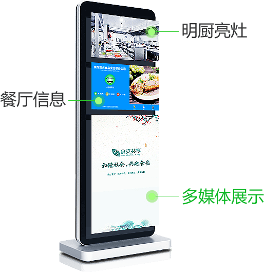

- 食安
- 利用视频监控技术，让消费者坐在餐厅的大厅或包间，就可以通查询机大屏幕将厨房的“一举一动”尽收眼底;通过对餐厅后厨关键环节的全景展示，让消费者把每盘菜“背后的故事”了解得真真切切，把每道工序流程尽收眼底，最大限度的消除消费者与餐厅的信息透明不对等，既是督促餐厅加强自律，也是鼓励他律，让餐厅全面接受消费者监督，主动保障饮食安全。
- 共同获益的明厨亮灶解决方案
- 更安心,提升消费者的消费体验，让消费者在就餐的过程中吃的安心，放心。
- 更透明,有效的提升餐厅自我监督和管理，更好的向消费者提供更优质的服务;
- 更满意,提升消费者对餐厅的认可度，获得餐厅品牌形象的提升和良好的口碑。
- 很有用,餐厅的查询机就是餐厅的"电子海报和公告板"，餐厅管理者可以通过食安共享的手机客户端方便灵活的发布餐厅的活动、特价菜等信息。
消费者 & 餐厅经营者 & 市场监管机构

- 多城市覆盖、全天候展示的媒体资源是发布政府公告、企业推广的强大平台
- 餐厅的查询机就是餐厅的"电子海报和公告板"，餐厅管理者可以通过食安共享的手机客户端方便灵活的发布餐厅的活动、特价菜等信息。
- 食安共享是多终端的全民参与性平台，通过平台的接入，餐厅的信息将通过App显示给广大用户，从而获得更有效且免费的网络推广渠道。